Everything* you need to know about (the math behind) 3D Graphics Programming you can learn from the equation x = 2
*to a rough first approximation
Table of Contents
Table of Contents
Introduction
Most introductions to the math of 3D graphics I’ve come across immediately get caught up in the details of why we use vectors with four components, \(4\times{}4\) matrices, and so on. That’s understandable, those are the tools we use and you’ll need to know how to use them. But I think there’s also value in slowing down a bit.
Ultimately, 3D graphics is about making things to be seen so being able to visualize what’s going on behind the scenes can be useful. But visualizing the behaviour of vectors in four dimensions is, at best, difficult; we have to do it by analogy. Jumping straight into \(4\times{}4\) matrices bypasses a bunch of useful comparisons and potentially makes building intuition more difficult.
My goal is to introduce some of the basic concepts of projective geometry in one and two dimensions, where we can fully visualize what’s going on, to make the 3D case more approachable.
I’ll hopefully also show that 2D projective geometry is interesting and useful in its own right. Especially if you happen to be a programmer to whom the phrase, “allergic to trigonometry,” might apply. We won’t calculate a single angle or evaluate a single trig function but we can still do quite a lot and, usually, easier.
As I’m mostly an enthusiatic hobbyist myself, this is aimed primarily at hobbyist programmers/game developers but might also be useful to undergrads looking to explore the math a little more than most Intro to Graphics Programminig courses usually do. That’s not intended as an insult to such courses or a suggestion that you shouldn’t take one. They have a lot of ground to cover and never enough time to cover it so just consider this bonus background material. I’ve tried to show and explain things in plain language as well as I can with some more formal, but probably non-standard, definitions and notation where I thought they’d be useful or necessary.
I think the only prerequisites for understanding this essay are a decent understanding of basic vector operations: vector addition and subtraction, scalar multiplication, the dot product, and cross product. I mention matrices a few times but don’t actually use them anywhere since I’m trying to focus mainly on the concepts and not the calculations.
Dimension One
Points in 1D
If we start with just a one dimensional space, a line, then we can think of the equation \(x = 2\) as describing a point/location within that space.
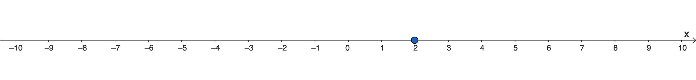
Figure 1: One dimensional Euclidean space showing the point \(x = 2\).
Slightly more formally we might say that a point in one dimension is the set of all 1D vectors, \((x)\), such that \(x\) satisfies the equation \(x = a\) for some real number \(a\).
Obviously this equation has only one solution so points are unique, singular objects. No point is the same as any other point.
Now suppose we multiply both side of the equation by some non-zero constant \(\lambda\):
It looks different but, in practical terms, it changes nothing at all. The new equation has the same solution as the old one. Although points are unique, any point can be represented by many different equations. We can use this idea to define scalar multiplication on our point like this:
This is different than our usual understanding of scalar multiplication. Since (\ref{1d-point-def}) and (\ref{1d-scalar-mul}) represent the same point we find ourselves in an unusual situation where,
Objects which have this property are called homogeneous. If you’ve encountered 3D graphics programming before then “homogeneous” is probably a familiar word, as in “homogeneous coordinates” or even “the homogeneous coordinate \(w\).” And this is really all it means: multiplying the point by a (non-zero) constant doesn’t change the point.
Homogeneous Coordinates
But the usual way we represent vectors doesn’t have the homogeneous property at (\ref{hom-def}). The 1D vector \((x)\) isn’t, in general, equal to \((\lambda{}x)\) so where do homogeneous coordinates come from?
You may already know that we’re going to need an “extra” dimension but why? And how does an extra dimension magically make points homogeneous? If we subtract \(a\) from both sides then we can rewrite the resulting equation, \(x - a = 0\), as a vector dot product:
It’s still the same equation for a one dimensional point but now in terms of two dimensional vectors. We can use the first vector, \((x, 1)\), to represent the points of our 1D space. We’ll come back to \((1, -a)\) shortly but for now lets see in what sense \((x, 1)\) can be called homogeneous.
Since our vectors have two components we’re dealing with a two dimensional space. We’ll call the horizontal axis the x-axis, as usual, because it runs in the same direction as the 1D Euclidean space we started with. This is our Euclidean axis. The vertical axis is the extra one. It doesn’t exist in the 1D Euclidean space that we’re modelling, it’s something new. We’ll call this the w-axis.
Since \(x\) represents the solution to a point equation, if we take every solution to every possible point equation, those solutions form the line \(w = 1\) in this new space. Let’s call it the view line.
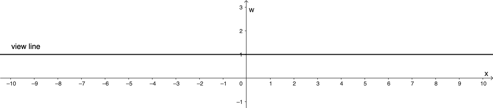
Figure 2: The view line in projective space.
Think of the view line as a “copy” of our 1D Euclidean space embedded in this larger 2D space. This is a one dimensional projective space. One dimensional because that’s the size of the Euclidean space we’re modelling and “projective” indicating that we’re working with the extra dimension, \(w\).
In a sense, the view line is “real space” and everywhere else is “extra space” or “other space.” For a general vector in other space, \(p = (a, b)\), the only thing we’re actually interested in is where \(p\) intersects the view line: where it crosses real space. That’s why it’s called projective geometry, because we take vectors like \(p\) and project them — as in intersect them with, or extend them — onto the view line. Multiplying \(p\) by a constant changes its length but it doesn’t change where the intersection occurs.
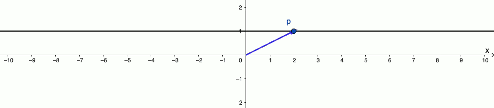
Figure 3: Scaling the vector doesn’t change the point it represents.
So, while it’s true that \((\lambda{}a, \lambda{}b)\) is not, in general, numerically equivalent to \((a, b)\), they both represent the same 1D point \(\left( \frac{a}{b} \right)\) because \(\left( \frac{a}{b}, 1 \right)\) is where they both hit the view line. The set of vectors \(\lambda{}(a, b)\) forms an equivalence class and it’s in that sense that we can say,
and why they’re called homogeneous coordinates.
We’ll call points directly on the view line — points with a w-coordinate of 1 — normalized points. So if \(p = (a, b)\), then the normalized form of \(p\), \(\tilde{p}\), is
They’re the same point and most of the time we can use them interchangably but the normalized point, \(\tilde{p}\), contains the point’s Euclidean representation while the more general \(p\) doesn’t.
Homogeneous coordinates come with some interesting and useful side-effects. For instance, in normal Euclidean space we can: add two vectors together to get another vector; add a vector to a point to get a new point; or even subtract one point from another to get a vector. But what does it mean to add two points together? In Euclidean space adding two points doesn’t really make sense.
In projective space, given the point \(p\) and \(q\), the midpoint, \(m\), between them is,
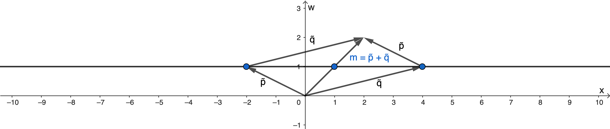
Figure 4: The sum of two points is their midpoint.
Another interesting consequence is that the view line in projective space is, in a sense, larger than the 1D Euclidean space it represents. By exactly one point.
The Point at Infinity
In Euclidean space, lines stretch off forever in both directions and contain an infinite number of points. The view line in 1D projective space also stretches out forever in both directions and contains those same infinite number of points. And then it has one more.
We’ve said that a point is where the vector, \(p = (a, b)\), intersects the view line, \(w = 1\). But what if \(b = 0\)? In that case \(p\) doesn’t intersect the view line so does it still represent a point? And if so, what point? To answer that question, let’s ask a different one: given some point on the view line, \(p = (x, 1)\), what happens as \(x\) gets larger?
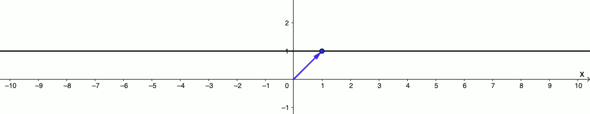
Figure 5: Moving a point very far away.
As \(x\) gets larger the angle between \(p\) and the ground line, \(w = 0\), gets smaller. We can imagine, in the limiting case, as \(x\) goes to infinity the angle goes to zero. When that happens, \(p\) is parallel to the view line with a w-coordinate of zero. It’s a tad long at that point but homogeneity lets us scale it back to something more convenient like, say, \((1, 0)\).
Algebraically we could do this:
Then, as \(x \rightarrow \infty\), the fraction \(\frac{1}{x}\) goes to zero so,
This point, \((1, 0)\) — or any scalar multiple of it — is called the point at infinity or the ideal point. Although it never intersects the view line it’s still “on” the line in the sense that it’s the limiting case as we go infinitely far to either the right or left. We’ll never actually reach the point at infinity but we can always get closer to it. In Euclidean space we can have the concept of a point infinitely far away but the point doesn’t actually exist. In projective space it’s a real, tangible vector that we can manipulate like any other.
Since the ideal point is parallel to the view line, adding it to a regular point moves us from one spot on the view line to another. It moves us in the direction of infinity by some amount. It’s a direction and a magnitude confined entirely to the view line. Or, we might say, confined to Euclidean space. Another way to interpret ideal points is as the Euclidean vectors of the embedded space.
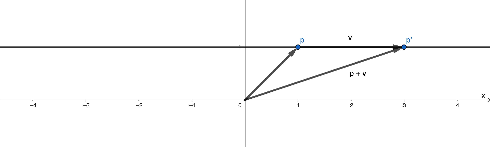
Figure 6: Points at Infinity act like Euclidean vectors.
Note that for 1D projective space there is only one ideal point. The homogeneous property applies to ideal points just like normal points so any scalar multiple of a point at infinity is that same point at infinity. What changes is how far, or how quickly, we move towards infinity but, at least for now, it’s always the same infinity.
Composable Translations
After all that we come to what is, probably, the main reason why projective geometry is used in graphics programming. In Euclidean space, translations — moving from one location to another — can’t be written as a matrix transformation. Other types of transformations, like rotations, can and that lets us combine multiple transformations together using matrix multiplication. That’s because translations are affine tranformations but matrices encode linear transformations. For our purposes the details don’t really matter and it’s been covered by others countless times before.
The important thing is that combining transformations like this lets us apply one big transformation instead of having to individually apply a bunch of small ones. And when you have to apply the same transformation to hundreds, if not thousands, tens of thousands or even more points at a time, that kind of efficiency matters. A lot. Since translations in Euclidean space can’t be expressed as a matrix, they can’t be combined with other tranformations and that efficiency goes out the window. Making complex 3D objects move on screen in real time becomes a nightmare if not outright impossible.
Homogeneous coordinates to the rescue: Rotating a point in projective space looks like a translation from the perspective of the view line and rotations can be combined. In practice we actually implement translations as a shear transformation rather than a pure rotation; it’s both simpler and keeps the point on the view line but it’s the rotation that’s important. A shear is just a rotation plus scaling and we know, thanks to the homogeneous property, that scaling doesn’t change the point.
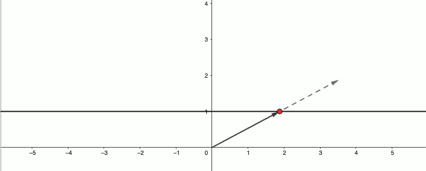
Figure 7: Rotation in 2D projective space is translation in 1D Euclidean space.
That’s where many explanations of 3D graphics math begins and ends. Why do we use coordinates with an extra dimension and a funny name? Because translations. The end.
But we’re just getting started.
Duality: The Lost Vector
When we derived homogeneous coordinates, way back in equation (\ref{hom-coords}), it was as the first of two vectors. What ever happened to the other one? Most people focus on the points, and I get it those are important, but in my opinion you’re throwing out most of the interesting and useful parts of projective geometry by ignoring the other one. So what’s the deal with \((1, -a)\)?
The second vector in equation (\ref{hom-coords}) is called a dual vector but I’m going to call it an equation vector because I think that’s a better description of what it actually is. And what it actually is, is the coefficients of an equation. Specifically the coefficients of the equation we used to define homogeneous coordinates, \(x - a = 0\). The coefficient of \(x\) is \(1\) and \(-a\) is a constant term.
In general, an equation vector, \(L = (a, b)\), represents the equation \(ax + b = 0\). And what equation (\ref{hom-coords}) is actually telling us is that for some point in projective space, \(p\), and some equation vector, \(L\), then point \(p\) satisfies equation \(L\) if and only if,
Because of the properties of dot products we could instead say that point \(p\) satisfies equation \(L\), if \(p\) and \(L\) are perpendicular. That’s another way to see why points and equations are homogeneous: the perpendicularity of two vectors doesn’t depend on their lengths. If a given point satisfies a given equation then we can scale the point vector, or the equation vector, or both and (\ref{perp}) will still be true.
Since both point vectors and equation vectors are vectors in two dimensions how do you tell them apart? In a sense, you don’t. Any vector in projective space, \((a, b)\), can represent either a point — including a point at infinity — or an equation. This idea that vectors can represent two different things is called a dual representation or just duality.
Actually, there is one exception. The vector, \((0, 0)\), doesn’t represent anything: It doesn’t intersect the view line so it doesn’t represent a Euclidean point; it doesn’t give any direction information so it’s not a point at infinity; and as an equation, \(0x + 0 = 0\), is indeterminant. The vector \((0, 0)\) is like a black hole in 1D projective space. For every other vector, whether it represents a point or an equation depends on context and how you’re using it. I’ll use the following conventions from here on.
- Point Vectors
- lowercase letters, coordinates in angle brackets: \(p = \left< a, b \right>\), \(v = \left< a, 0 \right>\), etc. When \(b \ne 0\), these represent Euclidean points and when \(b = 0\) they represent points at infinity which can be thought of as Euclidean vectors.
- Normalized Point
- tilde, w-coordinate equal to one: \(\tilde{p} = \left< \frac{a}{b}, 1 \right>\).
- Normalized Ideal Points
- Normalized in the usual sense of being a unit vector. In 1D this is either \(\left< 1, 0 \right>\) or \(\left< -1, 0 \right>\) since, by the homogeneous property, this is the only ideal point and these are the only multiples which are unit length.
- Equation Vectors
- uppercase letters, coordinates in square brackets: \(L = [a, b]\). We’ll discuss normalized equation vectors when we get to two dimensions.
We can say the point \(\left< a, b \right>\) is dual to or the dual of equation \([a, b]\) and vice versa.
As far as I know, this is not standard notation. The different brackets don’t actually change anything or affect how operations like the dot product work, I’m just using them to help keep the context clear.
Equation vectors really start flexing their muscles in two dimensions but there’s one last thing we can say about them here: No point can ever satisfy its own dual equation because no vector can ever be perpendicular to itself.
Algebraically,
Dimension Two
Points, Equations and Duality in 2D
In two dimensions we can’t define a point with a single equation like we could in one dimensions. But we can use one equation for the x-coordinate and another for the y-coordinate:
where \(a, b, c_1\), and \(c_2\) are all real numbers.
Then we can define points and scalar multiplication in the same way:
Again both \(p\) and \(\lambda{}p\) give the same solutions and therefore represent the same point. Points in 2D are also unique and also homogeneous.
To get homogeneous coordinates we can simply add the two coordinate equations, (\ref{x-coord}) and (\ref{y-coord}), together into a single equation. If we do that, and let \(c = c_1 + c_2\), we get
which, as a dot product, becomes
So our (normalized) point vectors have the form \(p = \left< x, y, 1 \right>\) and equation vectors look like \(L = [a, b, c]\).
As before, we’ve embedded a Euclidean space into a larger projective space with one extra dimension. Labelling our Euclidean axes with the familiar \(x\) and \(y\) and the extra projective axis as \(w\), the embedded space is again at \(w = 1\). Though in this case it’s a view plane rather than a view line.
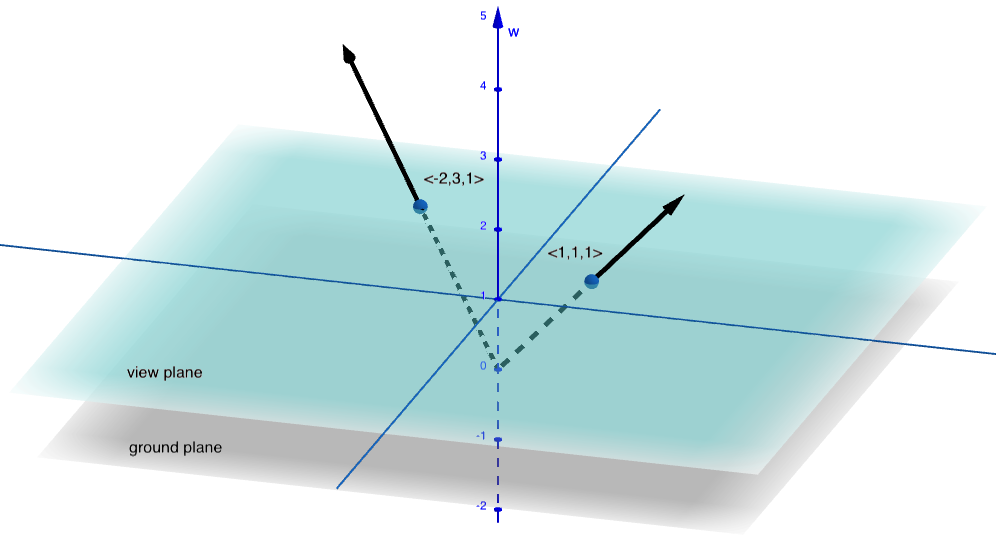
Figure 8: Points on the view plane in 2D projective space.
Equation vectors in 1D were the equations of points so, in a sense, both point vectors and equation vectors represented points. The equation \(ax + by + c = 0\) isn’t a point, it’s a line: In 2D, points are dual to lines. Even though 2D equation vectors represent a different kind of object than 1D equation vectors, the relationship we saw at (\ref{perp}) between point vectors and equation vectors still holds. Point, \(p\), is on line, \(L\), if and only if \(p \cdot L = 0\).
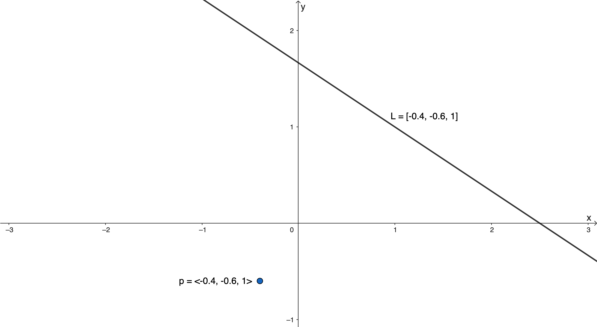
Figure 9: Top-down view (w-axis not shown) of a 2D point and its dual line.
Rotation and Translation
We saw that rotations in 1D projective space corresponded to translations in 1D Euclidean space. The same thing happens in 2D projective space but not for all rotations. Rotations around the w-axis correspond to rotations in 2D Euclidean space while rotations around the other axes correspond to translations.
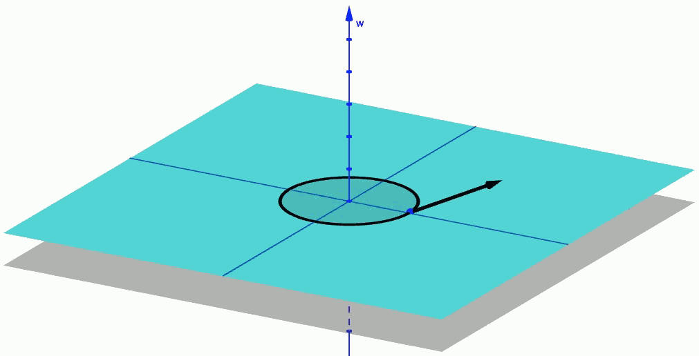 |
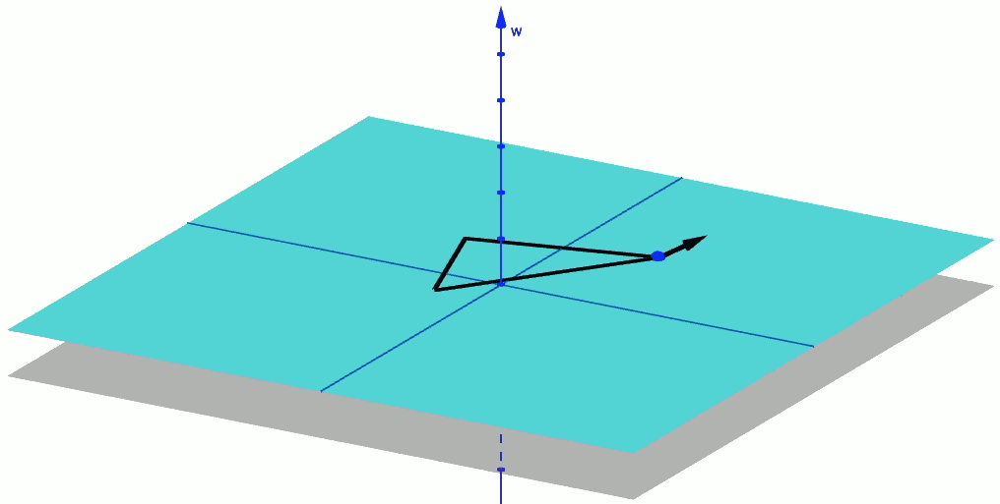 |
Figure 10: Rotation and Translation in 2D.
Lines in 2D
So points are dual to lines. But why are points dual to lines? Okay, yes, the derivation of 2D homogeneous coordinates gave us the equation of a line. But that’s not a very satisfying answer. What’s going on, geometrically, that results in a line?
Remember what equation (\ref{perp}) is telling us: a point satisfies an equation, if the point vector and equation vector are perpendicular. If \(L\) is the equation vector for a line, taking every point on the line means finding every vector perpendicular to \(L\); every vector perpendicular to \(L\) forms a plane. Because the plane perpendicular to \(L\) contains points, what we want to know about them is where they intersect the view plane. And the intersection of two planes is a line.
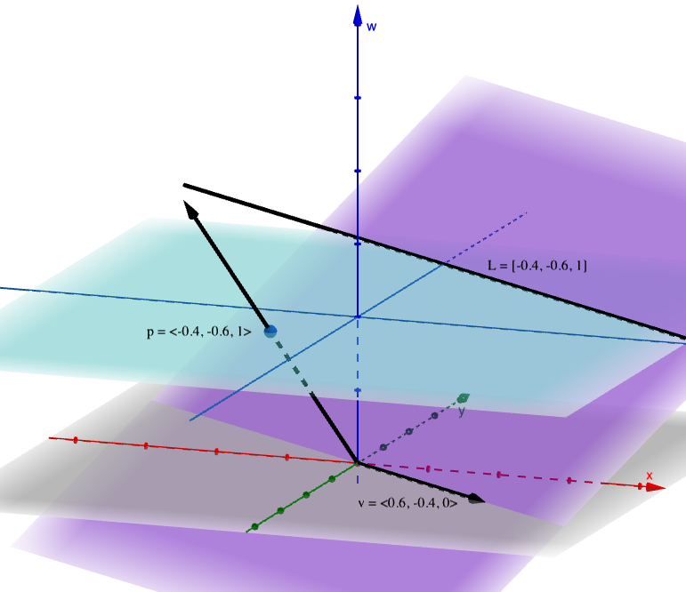
Figure 11: A 2D point and its dual line formed by the intersection of the view plane with the perpendicular plane; the line’s point at infinity is the intersection of the perpendicular plane with the ground plane.
Points at Infinity in 2D
Just as the view line in 1D contained a point at infinity, so too does every line in 2D. There are infinitely many lines so there are also infinitely many points at infinity. And just like before, they have a w-coordinate of zero and are parallel to the view plane. We can think of them as Euclidean vectors because they indicate directions in the embedded space. Specifically, a line’s point at infinity is the vector indicating the direction of the line, as seen in the figure above.
We can find the ideal point, \(v\), of a line, \(L\), with any two points on that line. Given points \(p\) and \(q\),
Note that since the ideal point is a point on the line, it should satisfy (\ref{perp}). That is, \(v \cdot L\) should equal zero.
\begin{align*} v \cdot L &= (p - q) \cdot L \\ &= p \cdot L - q \cdot L. \end{align*}Since we took \(p\) and \(q\) to be points on the line we know that \(p \cdot L = q \cdot L = 0\) by (\ref{perp}) so,
Normal Vectors and Normalized Lines
If we have a line, it’s pretty common that we’re also going to want the line’s normal vector. And, luckily for us, the normal vector is part of the equation vector itself. For a line, \(L = [a, b, c]\), its normal vector, \(n_L\), is
One way to define a line in two dimensions is by it’s 2D Euclidean normal vector, we’ll call it \(n_{(E)}\), and a distance. This is another way we can think of the equation vector, we could write it as \(L = [n_{(E)}, c]\). Since \(n_{(E)}\) has two components \(L\), as a whole, has three components.
So for line, \(L = [a, b, c]\), the Euclidean normal vector is, \(n_{(E)} = (a, b)\), and the distance is \(c\). Specifically, \(c\) is the signed, perpendicular distance from the line to the origin, multiplied by the magnitude of \(n_{(E)}\). If \(n_{(E)}\) is a unit vector then \(c\) is just the distance to the origin.
Note that \(c\) is a signed distance in the direction of \(n_{(E)}\). It can be either positive or negative depending on which way the normal vector is pointing. The distance is measured from the line to the origin not the other way around. That will be important soon.
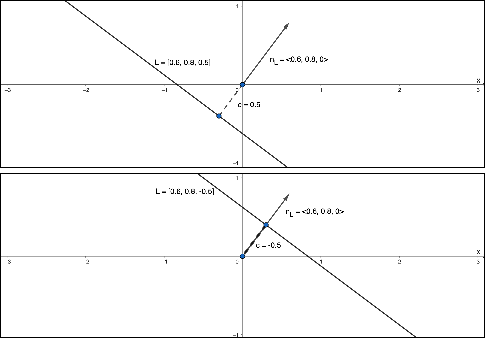
Figure 12: Two lines with the same normal vector. One with positive distance to the origin (top) and the other with negative distance to the origin (bottom)
Since the line already contains its Euclidean normal vector, to get its homogeneous normal vector, we just keep \(n_{(E)}\) but throw away \(c\), hence,
Another way to look at it is that \(n_L\) is the shadow of \(L\) onto the ground plane. Since \(L\) is perpendicular to the plane of points which make up the line in projective space, it’s shadow is naturally perpendicular to the line in Euclidean space or, equivalently, \(n_L\) is perpendicular to the line’s ideal point.
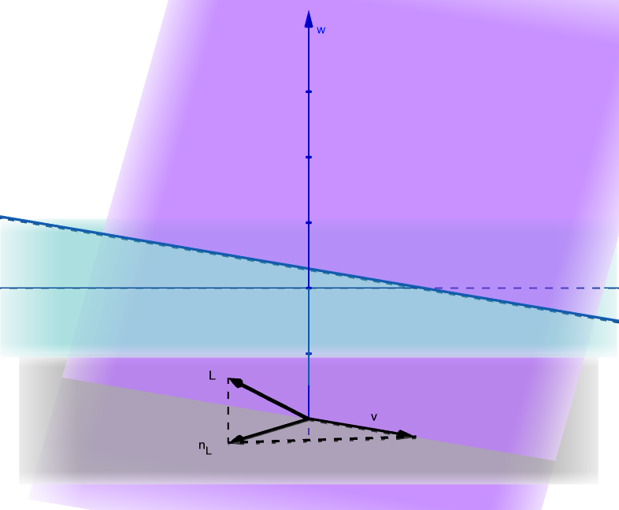
Figure 13: A line’s normal vector \(n_L\) seen as the shadow of \(L\).
The normal vector, \(n_L\), is normal in the sense of being perpendicular to the line but it’s not necessarily a unit vector. We can make it one by normalizing the line. For line, \(L\), the normalized line, \(\tilde{L}\), is
Note that \(\tilde{L}\) will not, in general, be a unit vector but \(n_{\tilde{L}}\) will be.
Joining Points
Suppose we have two points, \(p\) and \(q\), and we want to find the line through them. If \(L\) is the equation vector we’re looking for, then it must be perpendicular to every point on the line. In particular, \(L\) must be perpendicular to both \(p\) and \(q\). In three dimensions, we have an operation which gives us a vector perpendicular to two others: the cross product.
The line through \(p\) and \(q\) is,
This even works when one of the points is a point at infinity. The line joining point \(p\) and vector \(v\), for instance, is the line through \(p\) in the direction of \(v\).
If both points are points at infinity the we get the line containing every point at infinity. No point on this line will ever intersect the view plane, so we call this the line at infinity. The line at infinity, \([0, 0, 1]\), is dual to the origin of the view plane, \(\left< 0, 0, 1 \right>\). One way to remember that this is the line at infinity, is that attempting to normalize \([0, 0, 1]\) would mean dividing by zero.
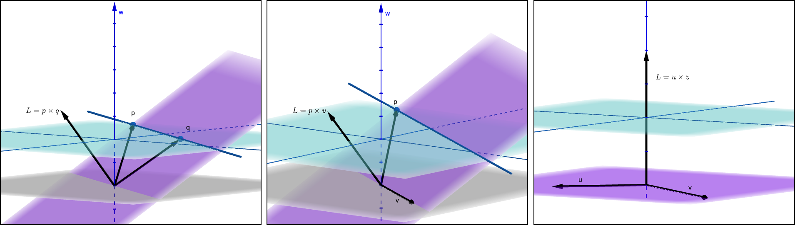
Figure 14: Joining points into lines: (left) 2 Euclidean points; (middle) Euclidean point and ideal point; (right) 2 ideal points.
Intersecting Lines
What about the opposite problem? You have two lines, \(L\) and \(M\), and want to find their intersection, \(p\)? Well, \(p\) must be on both \(L\) and \(M\) and therefore must be perpendicular to both \(L\) and \(M\). It’s actually the same problem. The intersection is,
This is a fundamental property of duality: for any true statement about points, we get another true statement about lines for free. Any two points in 2D are sufficient to define a line and, by duality, any two lines in 2D are sufficient to define a point, their point of intersection.
But wait a second: any two lines define a point? That can’t be right. What about parallel lines? Am I going to tell you that parallel lines intersect?
Yes. Yes, I am.
Remember that a line’s ideal point indicates its direction. Parallel lines, by definition, run in the same direction. That means parallel lines all share the same ideal point: they intersect at infinity.
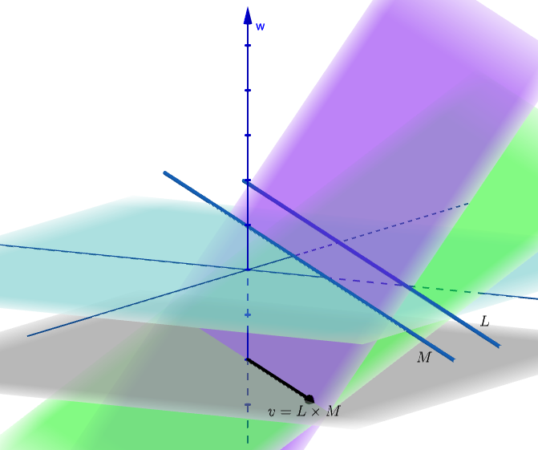
Figure 15: The intersection of two parallel lines is a point at infinity. Perpendicular vectors for \(L\) and \(M\) omitted.
Distance from a Line to a Point
Up to now we’ve only been considering points on the line. The equation \(p \cdot L = 0\) is the basis of everything we’ve done so far. But what about points not on the line?
Given a line, \(L\), and a point, \(p\), the dot product gives us the Euclidean distance, \(\delta\), from the point to the line:
Both the line and the point are normalized here because otherwise we’ll get some multiple of the distance rather than the distance itself. That might be okay depending on what you’re doing but usually we want the actual distance. The distance, \(\delta\), is a signed, perpendicular distance in the direction of \(n_{\tilde{L}}\) or, equivalently, \(n_{(E)}\). And of course, if the point is actually on the line, that distance is zero.
So how does it work? Well for starters, we can do a similar thing for point vectors as we did for equation vectors when discussing normalized lines. We can write a normalized, homogeneous point vector as its Euclidean coordinates, \(p_{(E)} = (x, y)\), with a ’1’ tacked on the end. Then we have,
Since we’ve normalized \(L\), the magnitude of \(n_{(E)}\) is one meaning \(c\) is the distance from the line to the origin. What about \(p_{(E)} \cdot n_{(E)}\)? This projects \(p_{(E)}\) onto \(n_{(E)}\), giving us the distance from the origin to the point in the direction of \(n_{(E)}\). The two distances partially cancel out and we’re left with just the distance from \(L\) to \(p\).
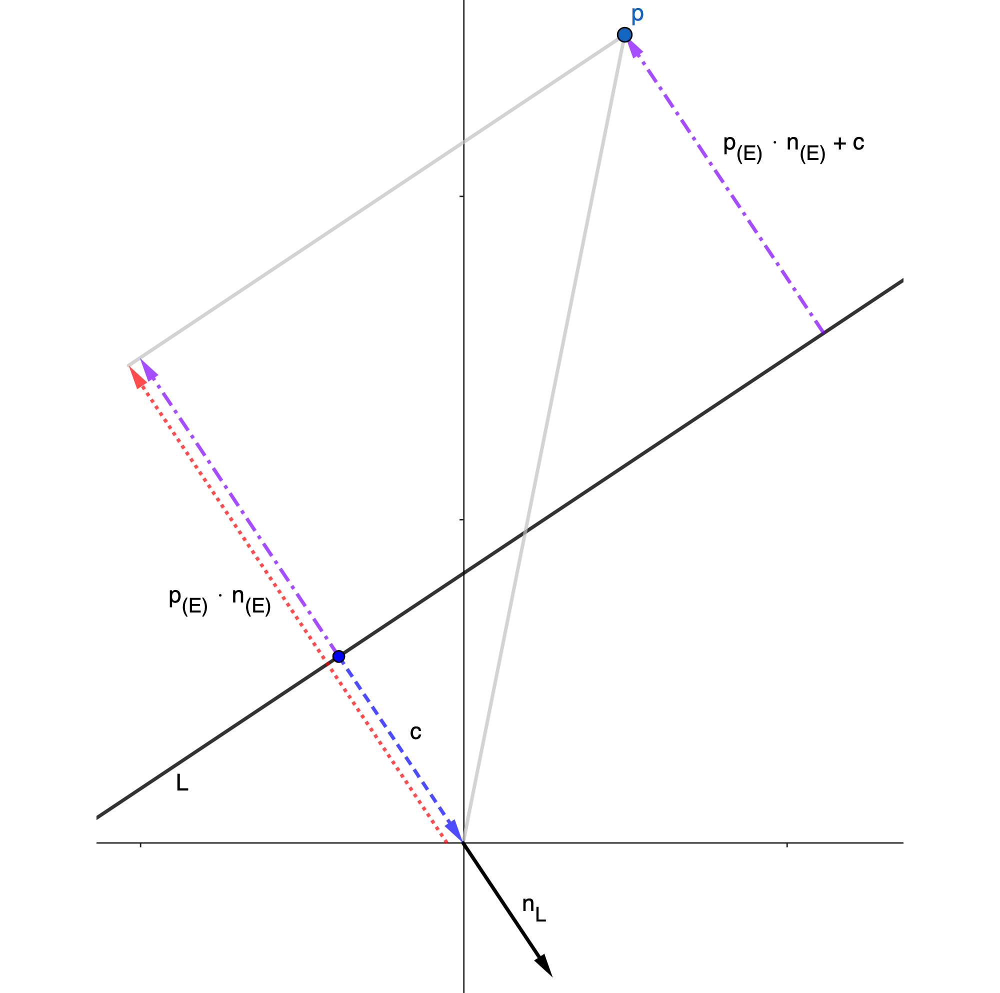
Figure 16: Calculating the perpendicular distance from \(L\) to \(p\).
Calculations in 2D
Lines, intersections and distances. It may not seem like much but a lot of calculations in 2D, especially for games, come down to some combination of finding distances to and/or intersections with lines. Not everything, of course, but a lot of things. Here are just a couple. I encourage you to play around with them and think about how to use these ideas to solve other 2D geometry problems. Assume that all points and lines are normalized.
Reflection of a point across a line
The reflection of a point, \(p\), across a line, \(L\), is
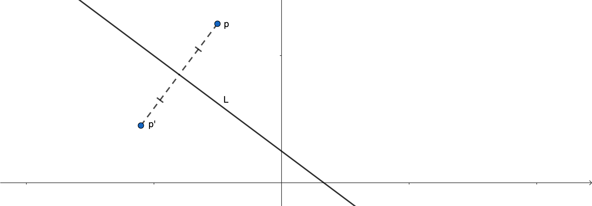
This one is pretty straight-forward: \(p \cdot L\) is just the distance from the line to the point as discussed above. To get the reflected point we want to double that distance but in the direction opposite to \(n_L\). Then just add that to \(p\) and you’re done.
Area of a triangle
If the points \(a, b\) and \(c\) are the vertices of a triangle, the area, \(A\), of the triangle is,
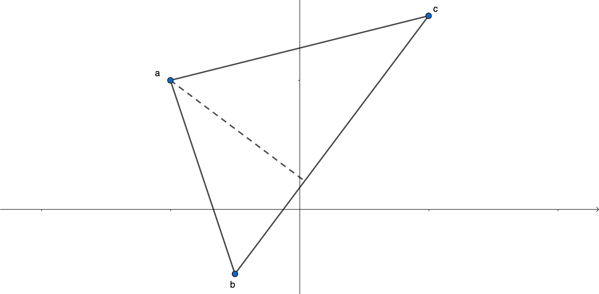
We know the area of a triangle is half the base times the height. If we let \(L = b \times c\), Then \(a \cdot \tilde{L}\) would be the height of the dashed line in the picture. But actually, we don’t normalize \(L\) here.
Remember, \(\tilde{L} = \frac{L}{|n_L|}\), so the height is:
But the magnitude of \(n_L\) turns out to be the same as the magnitude of \(b - c\): the base of the triangle. So the base times the height is just \(a \cdot (b \times c)\). That value could be positive or negative so we take the absolute value, divide by two, and there’s your area.
Intersection of a ray and a line
Casting a ray from \(p\) towards \(L\), find the point of intersection, \(q\), if it exists.
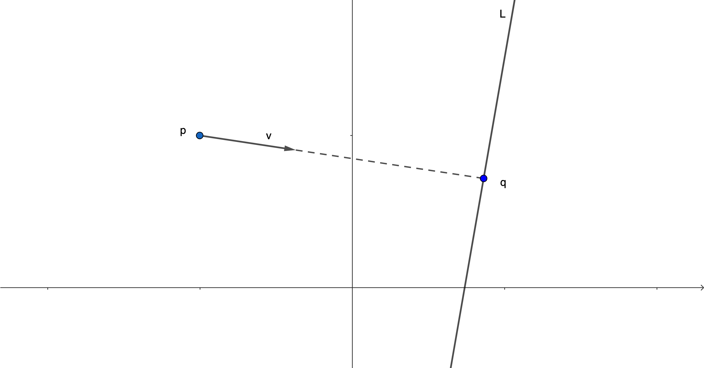
We can express the point, \(q\), as
Since we’re looking for a \(q\) that’s on \(L\), we know that \(q \cdot L = 0\). We can dot \(L\) with both sides of (\ref{in-front}) to find \(\alpha\):
If \(\alpha\) is negative then the line is behind \(p\) and no intersection occurs. Otherwise, if \(\alpha\) is positive, use equation (\ref{in-front}) to find \(q\).
Intersection of a ray and a line segment
The points \(a\) and \(b\) are the end points of line segment \(\overline{ab}\). Casting a ray from \(p\) in direction \(v\), find the point of intersection, \(q\), if it exists.
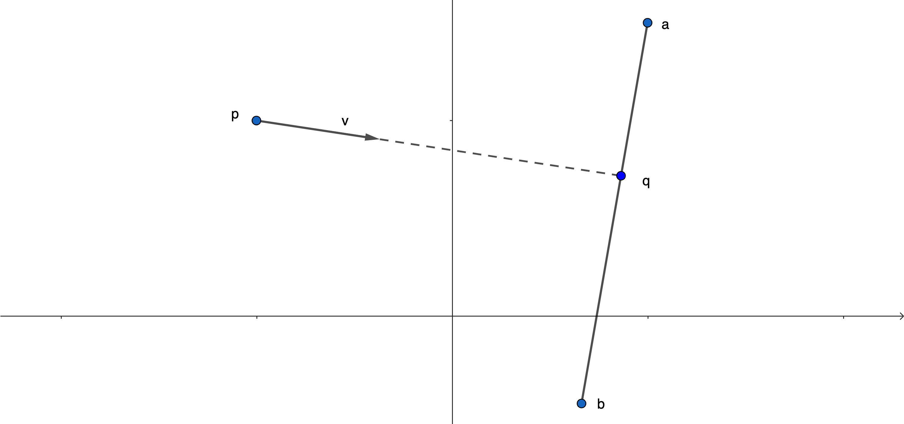
Start by finding, \(\alpha\), as above where \(L = a \times b\). If \(\alpha\) is positive then we know the ray hits \(L\) but to check if it hits \(\overline{ab}\) we need an extra step. Another way to find \(q\) is,
This is a simple linear interpolation so as long as \(\beta\) is between zero and one, \(q\) will be somewhere on the line segment.
Finding \(\beta\) is just like finding \(\alpha\) except this time using the fact that \(q \cdot R = 0\), where \(R = p \times v\). We get,
If \(\beta\) is between zero and one, use either (\ref{in-front}) or (\ref{eq-2}) to find \(q\). Otherwise \(q\) will be either above or below \(\overline{ab}\) so no intersection occurs.
Why Transforming Normal Vectors is Weird
Finally, I want to look at what can seem like a bit of a mystery the first time you encounter it. When you apply a transformation to a bunch of points, typically you also want to transform associated normal vectors. But if you use the same transformation it doesn’t work; the normals get all messed up. We usually encounter this problem in 3D, where normals are needed to calculate lighting, but the same problem exists in 2D as well.
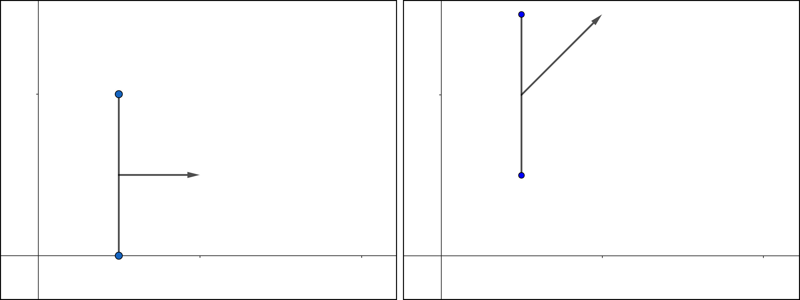
Figure 18: Two points and the normal vector of the line segment between them before (left) and after (right) applying a shear transformation. The normal vector is transformed incorrectly.
This confused me for ages. I knew that it was a problem and I knew mechanically how to correct the problem. But the reason why it was a problem bugged me. One explanation is that while points can move from one location in space to another, vectors are always rooted at the origin and that’s what causes the problem. That’s an okay explanation but I never found it particularly satisfying. But, I think, there’s a better one: the “problem” is duality.
Although points and lines, or more generally points and equations, are dual to each other, they’re fundamentally different objects. But because they’re dual to each other, as a collection of coordinates, they look the same and we can’t necessarily distinguish one from the other. As I said earlier, whether a given vector represents a point or an equation depends on context.
But remember that a line can be defined by its Euclidean normal vector and a distance. The line contains its normal vector and the whole reason we’re interested in normal vectors in the first place is because of the line, or plane in 3D, that it’s normal to. It’s not the normal vector that we want to transform but the line itself. The transformation we use to transform points will act on \(\left< a, b, 0 \right>\) when what we actually want to transform is \([a, b, 0]\) and a different object requires a different transformation.
I won’t do a full derivation here but if you’re familiar with linear algebra and want to try it yourself, you can start with the point joining formula we saw earlier: \(L = p \times q\). Let \(M\) be the matrix for transforming points and \(N\) be the matrix for transforming lines. You can figure out \(N\) by tranforming the points first and calculating the new line:
You should find that \(N\) is the transpose of the inverse of \(M\):
Dimension Three
For an essay claiming to explain the math of 3D graphics, I’m going to spend very little time actually talking about 3D projective space. Partly because, having already buried you in words, I don’t want to throw a ton of 4D matrices on top and partly because that’s the stuff actual graphics programming courses and tutorials will cover in detail.
That said, let me give you…
The Whirlwind tour of 3D projective space
The central equation which defined both our 1D and 2D projective spaces was,
When calculating distances from lines to points in 2D we re-wrote that as:
where both \(p_{(E)}\) and \(n_{(E)}\) were 2D Euclidean vectors and I’ve used \(d\) instead of \(c\) for the distance. Just like we embedded a Euclidean space into a larger projective space, we’re cramming Euclidean vectors as sub-components into larger vectors.
Now here’s the punchline: Since the dot product is well defined for vectors in any number of dimensions, equation (\ref{n-dim}) actually describes all projective spaces. If we let \(p_{(E)}\) and \(n_{(E)}\) be one dimensional vectors, we get the 1D projective space that we started with. If we let them be three dimensional we get 3D projective space. And if, for some reason, you want to do projective geometry in, say, 42 dimensions, now you know where to start.
In 3D:
- Point vectors, which you were probably already familiar with, look like, \(p = \left< x, y, z, 1 \right>\).
- Equation vectors, \(L = [a, b, c, d]\), are the equations of planes, \(ax + by + cz + d = 0\), because in 3D \(n_{(E)}\) is perpendicular to a plane with \(d\) being the signed, perpendicular distance from the plane to the origin, just like \(c\) was the signed, perpendicular distance from a line to the origin in 2D.
Everything we learned in one and two dimensions still applies. A sub-set of 4D rotations correspond to 3D translations while the rest correspond to 3D rotations or some combination of the two; points at infinity correspond to Euclidean vectors; parallel lines intersect at at infinity; and so on. Even many of the formulas don’t change: the sum of two normalized points is always their midpoint; reflection across a plane in 3D uses the exact same formula as reflection across a line in 2D; finding the distance from a plane to a point is just a dot product away; checking if a ray hits a particular triangle on a 3D mesh is, not identical, but similar to checking for intersections with line segments in 2D; etc.
When we go up a dimension we also get some new things. In 1D, we only had one point at infinity. In 2D, we had infinitely many points at infinity but only one line at infinity. Now, in 3D, we have infinitely many lines at infinity — each of which is the intersection of parallel planes — and a single plane at infinity, \([0, 0, 0, 1]\), which is dual to the origin, \(\left< 0, 0, 0, 1 \right>\), of the embedded space. Two points were sufficient to define a line in 2D and duality let us say that two lines were therefore also sufficient to define a point in 2D. Similarly, three points in 3D uniquely define a plane and, again by duality, three planes uniquely define a 3D point. Granted, calculating them isn’t quite as straight-forward as a simple cross product, but the principle is the same.
And that’s about it. There’s obviously a lot more to graphics programming than what I’ve covered here. If you’ve found the math of 3D graphics, homogeneous coordinates, and so on confusing in the past, hopefully this has helped.